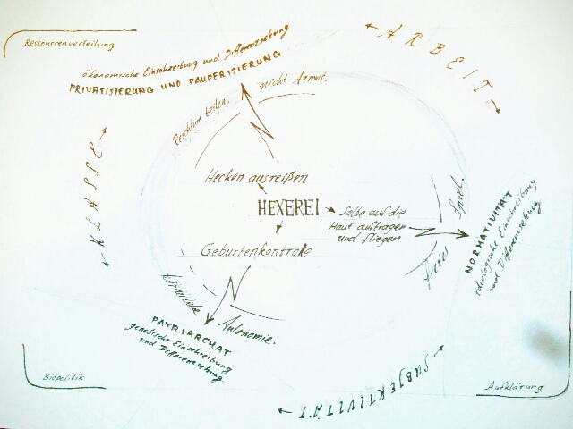

The witch-hunts, together with the first colonial genocides,
introduced a novel method of coercion that facilitated the hegemony of
patriarchy and private property in its modern forms. Namely, it was a
strategy of inscribing discipline into bodies. Inequality became
genetic—gendered and colonial—, practiced increasingly through mutual
competition instead of direct coercion.
In our current situation, we wish to liberate our bodies from the
hegemony of patriarchy and private property, and to shed the layers of
disciplining that the recent 500 years have inscribed onto us.
Challenging inscribed discipline with witchcraft
Looking for emancipatory strategies, we find, among others, the
practices of the witches. For our project, we categorize them as
follows:
(1) birth control.
The witches' crafts of abortion and contraception made the population
economically independent because women could decide how many children
they wanted. The illegalization of abortion was a biopolitical assault
on corporeal autonomy of women and arguably the main cause of
modernity's population explosion, leading to the pauperization of Europe
in the 16th century, and the world in the subsequent centuries.
Abortion is thus an act of reappropriation of both biopolitics, and
one's own body. It removes the body from the state's seizure and is
grounded in a body ethics that defies hegemonial institutions in
general, including marriage, Volks hygiene, racism and
heteronormativity.
(2) displanting hedges.
14th century England's Enclosures brought private property to land
that was formerly common. Defiant people would remove the hedges in
nightly 'direct actions'.
The non-observance of privatization was grounded in an economy of commons.
(3) rubbing ointment into skin.
An ointment made from herbs can be used in a ceremony. People would
rub the balm into their skin, and then, with the help of ritual and
hallucinogens, fly together.
During the middle ages, the shamanic traditions co-existed with the
patriarchal Christian tradition. It was the age of Enlightenment that
saw the men of the church unite with the new capitalist aristocracy and
the secular nobility to install moral bans against any spiritual
practice outside the church.
Rituals outside of ethical or utilitarian frames pose a threat to the ‘society of the spectacle’, to fulfillment-as-commodity.